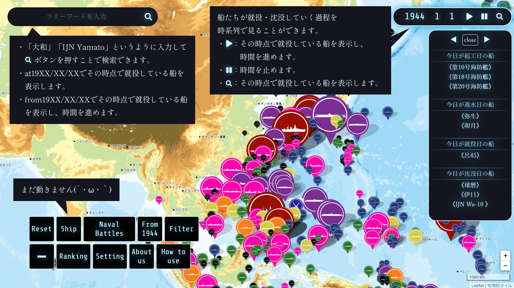

G
N
I
D
A
O
L
◀
close
▶
今日が起工日の船
今日が進水日の船
今日が就役日の船
今日が沈没日の船
1944
/
1
/
1
船たちの
眠る場所
Reset
Ship
Naval Battles
From 1944
Filter
+
Add data
Setting
About us
How to use
ようこそ、「船たちの眠る場所」へ
ここでは帝国海軍の艦艇たちがいつ、どこで沈んだのかを地図上で見ることができます。 （現在工事中で、戦後まで生き残った艦のデータが欠けています。
また、艦艇のイメージ画像には全てブラウザゲーム艦隊これくしょん-艦これの画像を使用してさせていただいています。）
分かった
艦名・年代を入力して検索することができます。
艦名・年代を入力して検索することができます。
twitter: mail:
製作の際に利用させていただいたサイト様
Imperial Japanese Navy Losses of WW II – Google プロダクト フォーラム
：ほぼ全ての英語・座標データはこれを使用させていただいています。
艦隊これくしょん艦これ
：艦艇のイメージ画像として使用させていただいています。 著作権法 引用 停止します。
×
はじめまして!
ここでは艦これに登場する艦船たちがいつ、どこで沈んだのかを地図上で見ることができます。新実装艦・特効予想・記念日の確認などにご活用ください！
⚠終戦まで生き残った艦は未実装です! (データは
IJN Losses World War Ⅱ
を参考にしているため。現在製作途中です。）
使い方を見る
×
How to use

メニュー